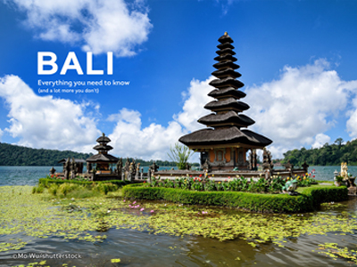
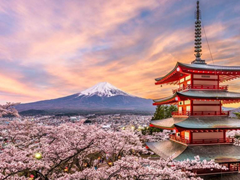
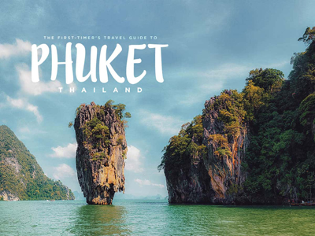
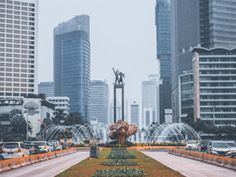
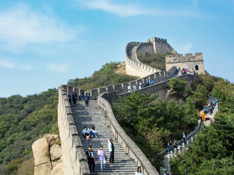

Destination
|  |
Bali, IndonesiaBali is an Indonesian island known for its forested volcanic mountains, iconic rice paddies, beaches and coral reefs. The island is home to religious sites such as cliffside Uluwatu Temple. To the south, the beachside city of Kuta has lively bars, while Seminyak, Sanur and Nusa Dua are popular resort towns. The island is also known for its yoga and meditation retreats. |
|  |
Mt. Fuji, Japan"Japan is one of the most popular travel destinations in the world. It is a unique blend of traditional and modern, with many temples and buildings from the past co-existing with modern achievements in architecture and technology. Visitors can be immersed in Japanese history and culture one day and get a glimpse of the future through technological developments the next. |
|  |
Phuket, ThailandPhuket province is located in Southern Thailand. It is the biggest island of Thailand and sits on the Andaman Sea. The nearest province to the north is Phang-nga and the nearest provinces to the east are Phang-nga and Krabi. Phuket has a large Chinese influence, so you will see many Chinese shrines and Chinese Restaurants around the city. A Chinese Vegetarian Festival is held there every year. While the Chinese community is quite big, there are many other ethnicities bringing all their traditions and festivals from all over the world to Phuket. |
|  |
Jakarta, IndonesiaJakarta also offers a selection of modern recreations, from animal attractions, amusement parks to a grand theme park that lets you experience in a single trip the arts and culture of islands from the entire Indonesian archipelago. Enjoy these best attractions in the Indonesian capital – there’s something for everyone. |
|  |
Great wall, ChinaBeijing is the best destination to admire the Great Wall of China. Most famous Beijing Great Wall sections are located in its suburban areas, including the well-preserved Badaling and Mutianyu, the renovated Juyonguan, Jinshanling and Simatai, and wild Jiankou and Gubeikou. They are all not far from downtown Beijing, 1-2 hours’ driving away. |